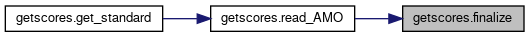
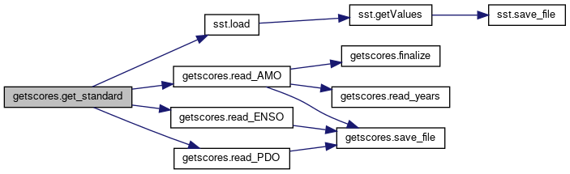
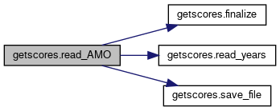
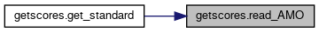
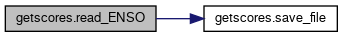
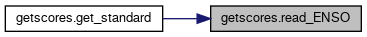
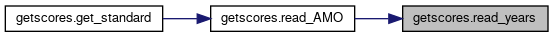
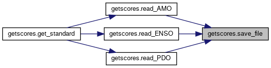

Functions | |
| def | save_file (url) |
| Save the given url. More... | |
| def | read_years (f, min_year, max_year) |
| Read data for given years. More... | |
| def | finalize (name, tmp, guard) |
| Clean up and reindex data for final output. More... | |
| def | read_AMO (url) |
| Read AMO data from URL. More... | |
| def | read_PDO (url) |
| Read PDO data from URL. More... | |
| def | read_ENSO (url) |
| Read ENSO data from URL. More... | |
| def | get_standard () |
| Get values for all indices and calculate moving averages and trends. More... | |
Variables | |
| string | DIR_DATA = r'data' |
| Directory to save data to. | |
| list | COLUMNS = ['Name','Year','Month','Value'] |
| Names for columns. | |
| list | INDEX = COLUMNS[:3] |
| Names for index. | |
| string | URL_AMO = r'http://www.esrl.noaa.gov/psd/data/correlation/amon.us.data' |
| URL for Atlantic Multidecadal Oscillation. | |
| string | URL_PDO = r'http://www.ncdc.noaa.gov/teleconnections/pdo/data.csv' |
| URL for Pacific Decadal Oscillation. | |
| string | URL_ENSO = r'http://www.cpc.ncep.noaa.gov/data/indices/ersst5.nino.mth.81-10.ascii' |
| URL for El Nino Southern Oscillation. | |
Detailed Description
Get ocean temperature indices and generate percent match scores
Function Documentation
◆ finalize()
| def getscores.finalize | ( | name, | |
| tmp, | |||
| guard | |||
| ) |
Clean up and reindex data for final output.
- Parameters
-
name Name to apply to data rows tmp DataFrame to use guard Value that indicates missing data
- Returns
- Reindexed data
Definition at line 60 of file getscores.py.
Here is the caller graph for this function:

◆ get_standard()
| def getscores.get_standard | ( | ) |
Get values for all indices and calculate moving averages and trends.
- Returns
- None
Definition at line 155 of file getscores.py.
Here is the call graph for this function:

◆ read_AMO()
| def getscores.read_AMO | ( | url | ) |
Read AMO data from URL.
- Parameters
-
url URL to read from
- Returns
- Atlantic Multidecadal Oscillation data
Definition at line 85 of file getscores.py.
Here is the call graph for this function:

Here is the caller graph for this function:

◆ read_ENSO()
| def getscores.read_ENSO | ( | url | ) |
Read ENSO data from URL.
- Parameters
-
url URL to read from
- Returns
- El Nino Southern Oscillation data
Definition at line 125 of file getscores.py.
Here is the call graph for this function:

Here is the caller graph for this function:

◆ read_PDO()
| def getscores.read_PDO | ( | url | ) |
Read PDO data from URL.
- Parameters
-
url URL to read from
- Returns
- Pacific Decadal Oscillation data
Definition at line 108 of file getscores.py.
Here is the call graph for this function:

Here is the caller graph for this function:
◆ read_years()
| def getscores.read_years | ( | f, | |
| min_year, | |||
| max_year | |||
| ) |
Read data for given years.
- Parameters
-
f File opened for read min_year Minimum year to get data for max_year Maximum year to get data for
- Returns
- Data for years in range
Definition at line 39 of file getscores.py.
Here is the caller graph for this function:

◆ save_file()
| def getscores.save_file | ( | url | ) |
Save the given url.
- Parameters
-
url URL to save
- Returns
- Path that URL was saved to
Definition at line 30 of file getscores.py.
Here is the caller graph for this function:
